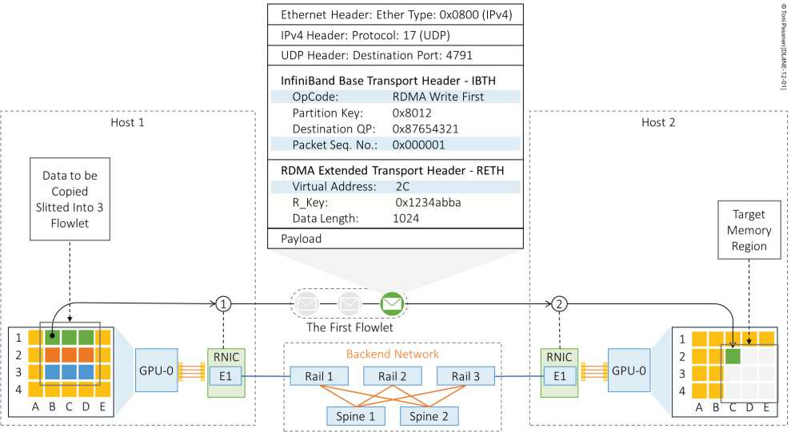
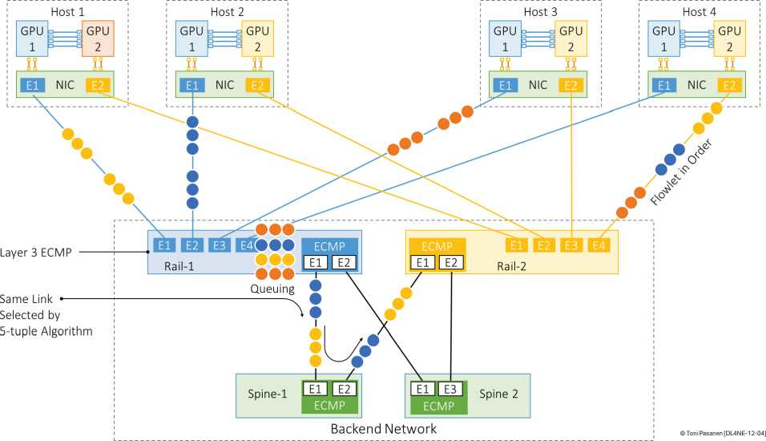

大梯度包拆多 MTU：First（含 R_Key/地址/长度+首段数据）、Middle（纯数据+PSN）、Last（尾段+完成标志）。网工抓包看 PSN 连续性即可判断乱序/丢包。书 p277-279 报文图必看。
按五元组哈希，同流永远走同路。优点保序、简单；缺点 AI 全是线速大象流，撞车即长期拥塞，不自适应。BGP ECMP 虽成熟，但对 RoCE 后端是“抽奖式均衡”。书 p282 实测不均。
AllReduce 时 N 路大象流同时起，ECMP 极化→某链路 100%、其余 30%，jobs 被最慢链路拖死。结论：Flow 够用在通用云，不够用在 AI 后端。


画出 First/Middle/Last 三段，并注明 PSN 作用。